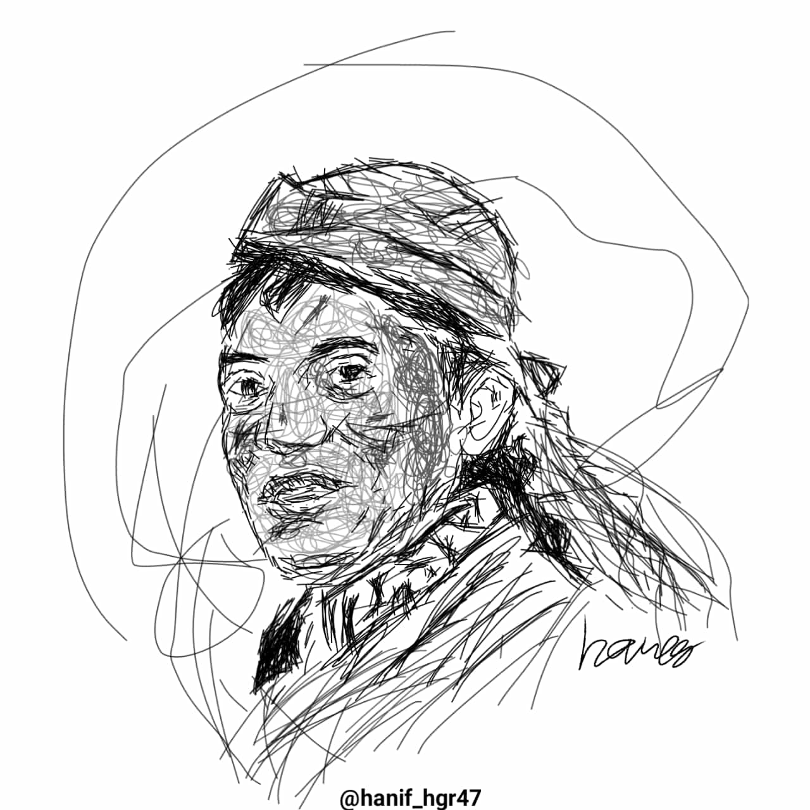

X
Gusti Yesus
Digital Art
Gusti Yesus
Digital Art
KARYA
Di bawah ini beberapa kumpulan-kumpulan karya dari Hares Design. Klik pada gambar untuk melihat karya lebih detail!
Tuhan Yesus
Bujana Suci
Wayang Gusti Yesus
Jreng
Marsekal Hadi Tjahjanto
Pangen Kang Utama
Joko Widodo

Ki Manteb Soedarsono
Soeharto
KRI Nanggala 402
Ki Hajar Dewantara
